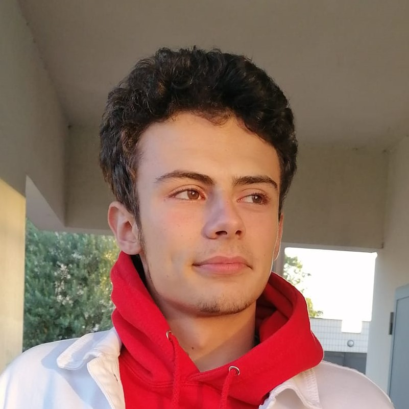

Je m'appelle Tom et je suis étudiant en école de commerce à l' EMLV
Retrouvez moi sur le site :
J'aime aussi particulièrement les gens qui m'entourent et j'adore vivre des expériences avec eux. J'apprecie également les voyages que ce soit en France ou dans le monde. J'ai découvert la ville de Metz il y a pas longtemps avec des amis. Une ville magnifique avec des paysages superbes autour de la Moselle.
Mon rêve serait d'aller au japon mais également d'explorer la France entière car c'est un pays surprennant et très diversifié.
_________________________________________